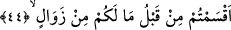

el-Kevâşî’de şöyle der: “Bazıları mazlûmun mazlûm olarak ölmesini kıyâmetin
kopacağına delil saymışlardır.”
Bir kayanın üstünde şöyle bir yazı bulunduğu söylenir:
Senin gözlerin uyuyor ama zulmettiğin kişi uyanık
Sana bedduâ ediyor; bilesin ki Allah uyumaz!
Sa‘dî (k.s.) der ki:
Mazlûm uyumaz, sen onun âhından kork!
Mazlûmun seher vaktinde gönlünden çıkan nefesten kork!
Korkmaz mısın ki içi pâk ve saf olan adam gece,
Yanan ciğerini “Yâ Rab” diye çeker.
Ey aklı nâkıs olan kurt, korkmaz mısın?
Çünkü bir gün kaplan seni yere çarpar.
44. Kendilerine azâbın geleceği, bu yüzden zalimlerin: “Ey Rabbimiz! Yakın bir
müddete kadar bize süre ver de senin davetine uyalım ve peygamberlere tâbi
olalım” diyecekleri gün hakkında insanları uyar. (Onlara denilir ki:) “Daha önce,
sizin için bir zevâl olmadığına, yemin etmemiş miydiniz?”
Ey Muhammed! “Kendilerine azâbın geleceği, bu yüzden zâlimlerin:” şirk koşmak
ve tekzib etmek sûretiyle zâlim olanların: “Ey Rabbimiz! Yakın bir müddete kadar”
yâni çok fazla sürmeyecek bir zaman dilimi için “bize süre ver de” bizi dünyâya geri
gönder ve mühlet ver.
Müfti Sa‘dî şöyle der: “Herhalde bu ibârenin dizilişinde zımnen bulunan bir şey
vardır. Takdiri ise şöyledir: “azâbımızı tehir ederek bizi yakın, yâni az süreli olan
dünyâya geri döndür.”
Kâşifî şöyle der: “Bizim azâbımızı tehir et, bizi dünyâya gönder ve onun müddetine
yakın bir müddete kadar mühlet ver.”
Ecellerimizi geciktir ve sâdece sana îmân edip dâvetine icâbet edebileceğimiz kadar
bir süre kalalım.
“Senin dâvetine uyalım” sana yapılan çağrıya ve seni tevhîd etmeye icâbet edelim
“ve” bize getirdikleri prensiplerde “peygamberlere tâbi olalım.” Yâni ‘dünyâda iken,